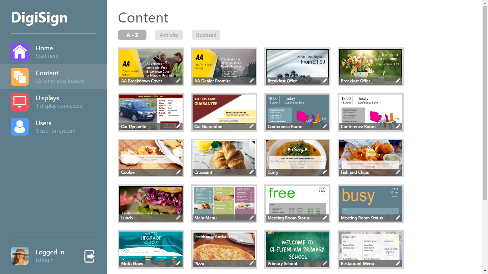

DigiSign
A real-time digital signage system
As part of my final year group project module, I am the lead backend and frontend developer on DigiSign, a Digital Signage system. The system is built with AngularJS, Node.js, Express and MongoDB (MEAN Stack). The system allows the controlling of screens remotely through a web based UI. This happens in real-time, with the user able to change templates and make edits and have these reflected on the screen instantly.
